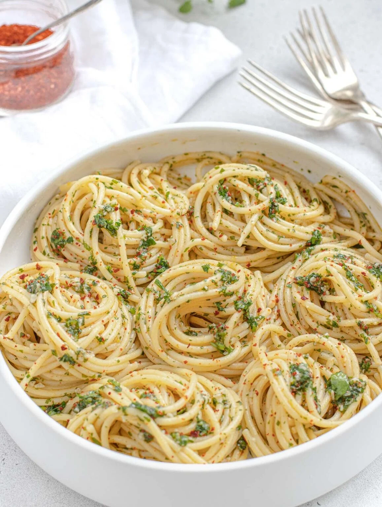

Spaghetti Aglio e Olio

Description
A quick and easy Italian pasta dish that's full of flavor!
Ingredients
- 400g spaghetti
- 4 cloves garlic, thinly slicec
- 1/3 olive oil
- 1/2 teaspoon red pepper flakes
- Salt and pepper to taste
- Fresh parsley, chopped
- Grated Parmesan cheese (optional)
Steps
- Cook spaghetti according to package instructions until al dente. Reserve a cup of pasta water before draining.
- In a large skillet, heat olive oil over medium heat. Add garlic and saute until golden and fragrant, about 1-2 minutes.
- Add red pepper flakes, then the drained spaghetti. Toss to coat, adding pasta water as needed to create a light sauce.
- Season with salt and pepper, and garnish with chopped parsley and Parmesan cheese if desired.
- Serve hot and enjoy!